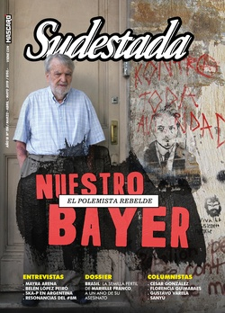

Buscar
La semilla regada a sangre
Marielle Franco fue más que una líder política de su país. Se convirtió en una mujer revolucionaria que dejó un mensaje a las generaciones futuras. De niña quiso cambiar la violencia de su favela y al crecer empuñó el feminismo y la defensa de los derechos humanos. Hoy esas ideas son parte de un proyecto político que resiste a los embates de un gobierno fascista y de ultraderecha. El 14 de marzo la asesinaron a tiros a la salida de un encuentro político. Pero su voz no se apaga.
Edición N° 156
Marzo-Abril-Mayo 2019
Revista bimensual
Comprar edición impresaSumario
- Nuestro Bayer. El polemista rebelde
- Los tiempos del parásito
- La semilla regada a sangre
- “Me cuestionan que estoy muy politizada, como si eso fuese algo malo”
- "El arte es una herramienta para explorar nuestro propio feminismo"
- Ska-P en Argentina. Los hijos del pueblo
- Las mujeres estamos en emergencia
- La espalda de una amistad
- El corazón lleno de fotos
- Una muerte mapuche, un crimen de Estado
- Machismo y música popular. Abran las tranqueras
- Arbolito Nicasio Maciel Fútbol Ranquel
- Para derrotar al patriarcado, hay que luchar junto a las travas
Compartir Articulo
Habían pasado las nueve de la noche del 27 de julio de 1979, cuando en los pasillos del Hospital "Praça xv" de Río de Janeiro, un llanto rompió el silencio. Por primera vez, Marielle Francisco da Silva hizo escuchar su voz. Así, con el alarde de quien conoce la luz, la hija mayor de Marinete da Silva y Antonio Francisco da Silva Neto, cumplió con lo que haría muchas veces más en su vida: mostrar la potencia de sus quejas, para las cuales nunca tendría la indiferencia como respuesta. Brotó de la tierra la semilla.
Nadie imaginó la representación de su nombre en el futuro. Que esa beba envuelta en una pañoleta se convertiría, treinta y siete años después, en la quinta concejala más votada de una de las ciudades de más representatividad política en Brasil, con 46.502 votos en su primera disputa electoral. Que sería una mujer que llevaría sus ideales a otras, que lucharía por ellas. Una socióloga, activista de los derechos humanos, maestra en Administración Pública, feminista, política y militante de los derechos de la población negra y LGBTIQ+.
"Nosotros estamos en proceso democrático. Van a tener que aguantar a las mujeres negras, trans y lesbianas ocupando la diversidad de los espacios", clamó en su último pronunciamiento en la Cámara de Concejales de Río; ocupada en su mayoría por hombres blancos y bien acomodados que la interrumpían cada vez que podían. No aguantaron.
La noche del 14 de marzo de 2018 salía del evento "Jovens Negras Movendo as Estruturas", en la calle de los Inválidos, en Lapa, cuando fue asesinada de cuatro tiros en la cabeza. Su auto recibió una docena de disparos provenientes de otro vehículo. En el atentado murió el conductor Anderson Pedro Mathias Gomes y se salvó una asesora que viajaba al lado de Marielle. Los criminales huyeron y hasta hoy las investigaciones permanecen bajo secreto policial.
Coincidencia o no: dos semanas atrás Marielle había sido nombrada relatora de la comisión que fiscalizaba la Intervención Militar en Río y había repudiado públicamente casos de violencia policial y abuso de poder. Un día antes de ese 14 de marzo dejó una pregunta en su cuenta en Twitter: "Un homicidio más puede estar entrando para la cuenta de la PM. Matheus Melo estaba saliendo de la iglesia... ¿Cuántos más precisarán morir para que esa guerra acabe".
La infancia en la favela
Marielle nació y creció en el Complejo de Favelas de Maré. Era su orgullo. Le gustaba autonombrarse como "cría de Maré". Ahí desarrolló su interés por las temáticas político-sociales, abrió los ojos a una realidad que necesitaba ser cambiada.
Con aproximadamente 130 mil habitantes y 16 comunidades diferentes, hoy es uno de los territorios populares más grandes de Río. Empezó a formarse en la década de 1940, en un área que se extiende entre la Avenida Brasil y la "Linha Vermelha", dos de los accesos más importantes de la ciudad.
Anielle Francisco da Silva –Naninha, como la llamaba su hermana Marielle– hoy tiene 34 años. Es profesora de inglés y literatura, vivió doce años fuera de su país y estudió en los Estados Unidos. "Éramos muy amigas, compañeras, confidentes. Mari era mi ángel, mi puerto seguro. Como éramos solo nosotras dos, Mari representaba la vida y el mundo para mí", le cuenta a Sudestada.
Las hermanas pasaban las tardes con los niños del barrio, jugaban al queimado o al vóley. "La vida en la favela fue muy dura y tensa, pasamos por muchas dificultades. A veces no podíamos salir de casa –cuenta Anielle–. Cuando había tiroteos y nosotras estábamos yendo a la escuela o volviendo para casa, ella usaba su cuerpo como escudo para proteger el mío, para cruzarnos del auto a la escuela, o del auto a casa"...
(La nota completa en la edición gráfica de Sudestada... ¿Por qué publicamos apenas un fragmento de cada artículo? Porque la subsistencia de Sudestada depende en un 100 por ciento de la venta y de la confianza con sus lectores, no recibimos subsidios ni pauta alguna, de modo que la venta directa garantiza que nuestra publicación siga en las calles. Gracias por comprender)
Comentarios
Karine Vasem Klein
Articulos más vistos


LIBRERÍA SUDESTADA

Colección infantil

Distribuidora de Libros

Suscripción

Sudestada en URUGUAY

Otros articulos de esta edición
Machismo y música popular. Abran las tranqueras
Son días de acciones para la concientización frente a las desigualdades de género y de visibilidad para las artistas femeninas ...
Los tiempos del parásito
?Dueños de todas las cosas, también pretenden apropiarse del sentido común y del imaginario colectivo. Para ese objetivo, mantienen firme ...
Las mujeres estamos en emergencia
En enero de este año hubo, al menos, 27 femicidios televisados y los primeros días de febrero los números siguieron ...
Nuestro Bayer. El polemista rebelde
Lejos del bronce que distorsiona su voz rebelde y fogosa, elegimos recordar a Bayer como siempre lo sentimos: como un ...
“Me cuestionan que estoy muy politizada, como si eso fuese algo malo”
Desde un barrio humilde de Bahía Blanca hizo escuchar su voz. Era una voz diferente, genuina, que contaba escenas de ...
El corazón lleno de fotos
Erica y Bernardo viajan por todo el país. En sus valijas llevan sus cámaras y un proyecto: “Memoria Escolar”. En ...